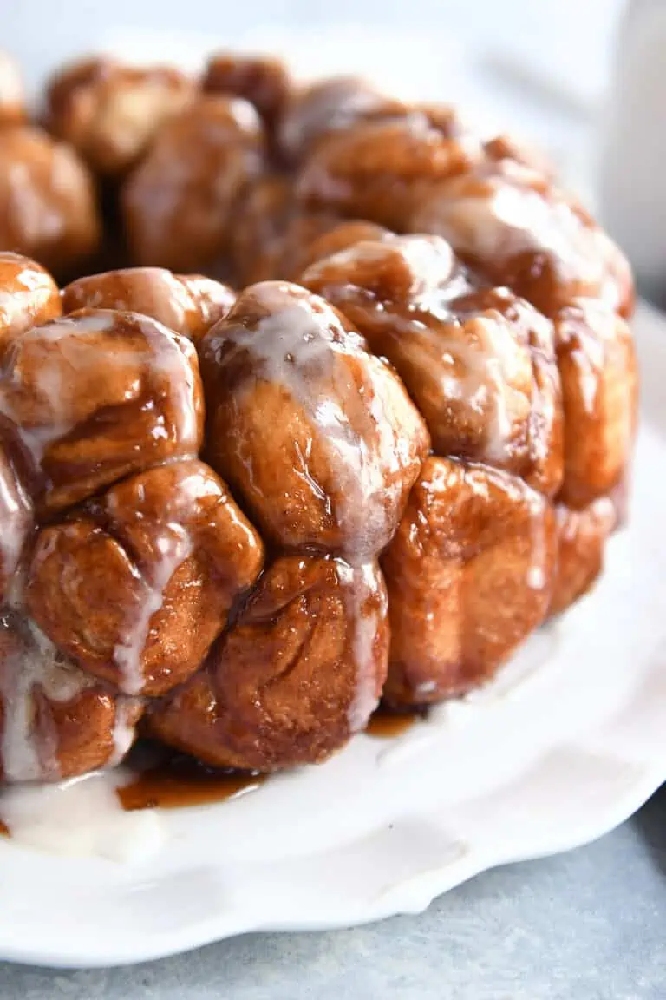

Monkey Bread
Go Back

Description:
If you haven't had monkey bread before, this is the perfect comfort food when you are craving
for something sweet. The bread is best served warm and it witholds this soft heavenly texture.
Every bite is addicting and people find it hard to stop!
Ingredients:
Pan:
- 2 tablespoons softened butter
Dough:
- 2 tablespoons (28 g) melted butter
- 1 cup warm milk (about 105 to 110 degrees F)
- ⅓ cup warm water (about 105 to 110 degrees F)
- ¼ cup (53 g) granulated sugar
- 2 ¼ teaspoons instant yeast
- 3 ¼ cups (462 g) all-purpose flour
- 2 teaspoons salt
Brown Sugar:
- 1 cup (212 g) packed light brown sugar
- 2 teaspoons ground cinnamon
- ½ cup (113 g) butter, melted
Glaze:
- 1 cup (114 g) confectioners’ sugar
- 2 tablespoons milk
Instructions:
- In a large measuring cup or bowl, mix together the milk, water, melted butter, sugar, and yeast.
- In a stand mixer fitted with the dough hook, add the flour and salt. With the mixer on low speed, add the milk mixture. Increase to medium speed and knead until the dough is smooth, 5 to 7 minutes.
- Place the dough in a lightly greased bowl, cover, and let the dough rise until doubled, 1 to 2 hours.
- Spread the softened butter evenly in a 12-cup bundt pan, using a pastry brush or piece of wax or parchment paper to ensure all the nooks and crannies of the pan are well-buttered. Set aside.
- Lightly punch down the dough. On a very lightly floured or greased countertop, press the dough into a thick rectangle or square, about 8 or 9 inches across. Use a bench scraper or pizza cutter to cut the dough into 64 small pieces.
- Roll each piece into a round ball shape.
- Combine the brown sugar and cinnamon in a bowl or shallow dish.
- Dip the dough pieces in melted butter and then roll evenly in the sugar mixture. Place the dough pieces in the prepared Bundt pan, offsetting the dough balls so they aren't stacked exactly on top of each other.
- Cover the Bundt pan and let the bread rise until noticeably puffy and nearly doubled, 1 to 2 hours.
- Preheat the oven to 350 degrees F. Uncover the bundt pan and bake until the bread is golden brown and the bread is baked through, 30 to 35 minutes. An instant-read thermometer inserted into the bread should read 190 to 200 degrees F.
- Cool the monkey bread in the pan for no longer than 5 minutes (any longer and the bread will be too sticky and hard to remove!). Turn the bread onto a platter.
- In a small bowl, whisk the confectioners' sugar and milk together until smooth. Drizzle the glaze over the top and sides of the warm monkey bread. Serve warm.
Source